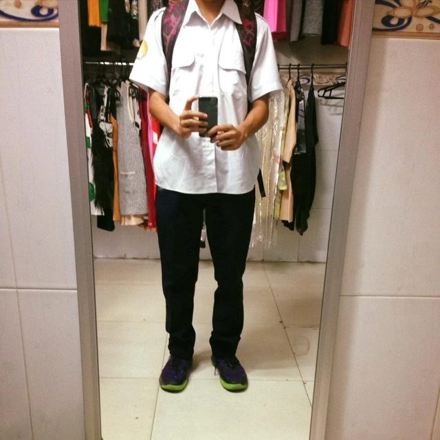
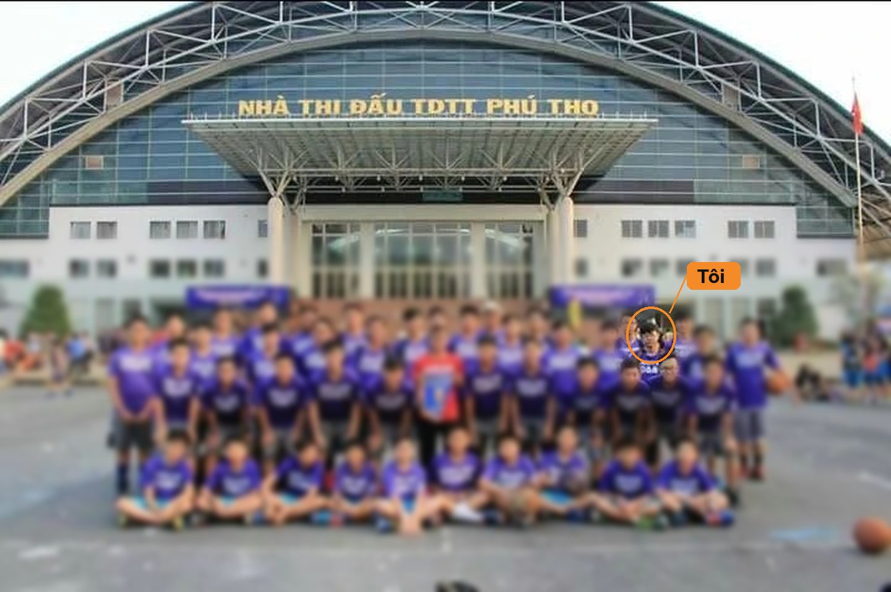
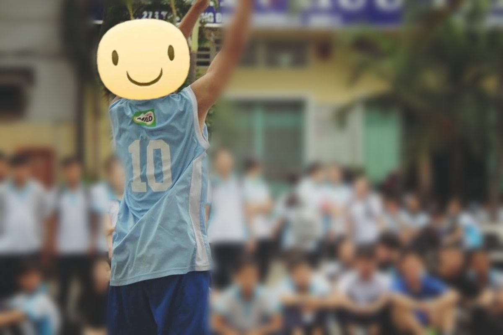
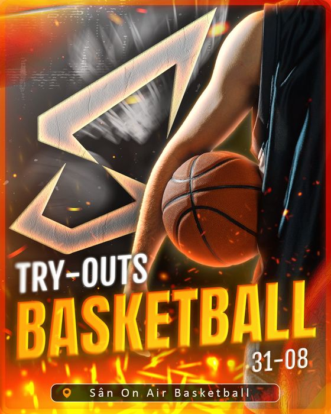
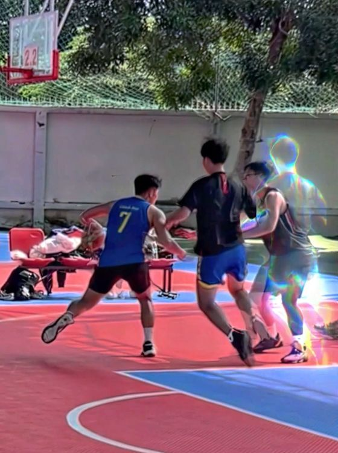
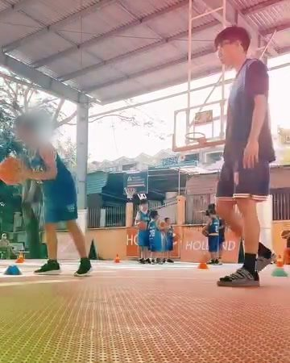
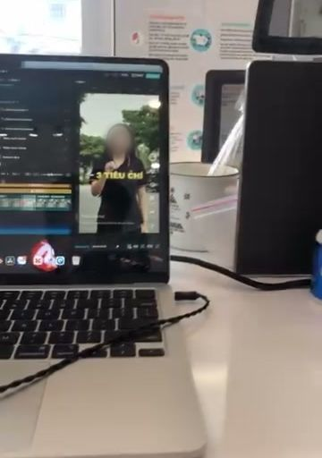
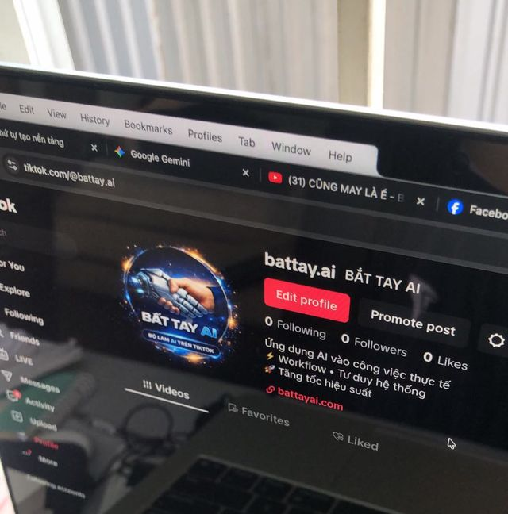

Bóng rổ đi cùng tôi từ quả bóng size 5.
Tôi biết đã có những bên làm và đưa ra giải pháp cho việc tìm người, quản lý buổi chơi. Tôi vẫn chọn làm Pickup Today, vì những gì sân bóng và cuộc sống đã dạy tôi thôi thúc tôi làm việc này tốt hơn.
- Tiểu học – cấp 2
Quả bóng size 5
Tôi chơi bóng rổ từ đầu tiểu học, khi quả bóng còn là size 5 vừa tay trẻ con, và chơi suốt những năm cấp 2.

Thời cấp 2, chụp bằng chiếc iPhone 5 Tôi hiểu người chơi từ bên trong, vì tôi là một trong số họ.
- Khoảng 2017
Đội bóng rổ Quận 8
Tôi chơi trong đội bóng rổ Quận 8. Tấm ảnh cả đội áo tím trước Nhà thi đấu Phú Thọ năm ấy, tôi vẫn còn giữ.

Đội Quận 8 trước Nhà thi đấu Phú Thọ; vòng cam là tôi, các bạn khác đã làm mờ Bóng rổ có tổ chức, nhìn từ phía người chơi.
- Lớp 10
Hạng 3 toàn trường, rồi đứt dây chằng
Năm lớp 10, tôi đứng hạng 3 ở giải bóng rổ của trường. Sau đó tôi đứt dây chằng đầu gối và phải phẫu thuật. Tôi trở lại sân với một lối chơi khác: quan sát nhiều hơn, điều tiết nhịp trận, ném xa hơn, và vẫn giữ những pha qua người.

Lớp 10, áo số 10; người xem phía sau đã làm mờ An toàn của người chơi là phần cốt lõi, không phải phần phụ.
- 2021
Mùa dịch, tự học dựng video
Tôi học thiết kế đồ hoạ. Những tháng giãn cách, tôi vừa làm đồ án vừa tự học dựng video; video giới thiệu bản thân cho môn kỹ năng giao tiếp là một trong những video đầu tiên trên kênh YouTube của tôi. Sau đó, tôi nghỉ học năm tư để đi con đường của riêng mình.
Video bài tập môn kỹ năng giao tiếp, 2021 26/07/2021: 4 người đăng ký, 129 lượt xem Tự học bằng cách làm ra sản phẩm thật.
- 2024
Tập cùng đội, làm media, dạy bóng
Tôi tập luyện cùng đội SYS (Show Your Style), thiết kế ảnh và dựng video cho đội. Ở đó tôi học được nhiều về cách một đội vận hành, cách tập, kiến thức thi đấu và chiến thuật, rồi đem về dạy lại cho học viên ở Eballs, nơi tôi làm trợ giảng rồi giảng viên. Mỗi video bóng rổ ngắn tôi dựng cho đội trên YouTube đạt từ 480 đến 658 lượt xem.

Poster tuyển quân tôi thiết kế cho SYS 
Video tôi dựng cho đội · YouTube 
Sân tập Eballs, máy đặt sát sàn; mặt học viên đã làm mờ Làm media cho một đội bóng, và dạy lại cho người mới những gì mình học được.
- 2025
Quay dựng cho MSPORT
Tôi quay, dựng và thiết kế cho MSPORT, công ty camera hành trình ô tô, với sản phẩm và khách hàng thật.

Bàn dựng ở MSPORT Quay dựng có trả phí, nền cho video trận đấu của Pickup Today.
- Đầu 2026
Battay AI ra đời
Ý tưởng Battay AI đến, và tôi bắt tay làm luôn trong buổi đó: kênh “Bắt Tay AI”, ứng dụng AI vào công việc thực tế.

Ngày ra mắt kênh Bắt Tay AI Bắt tay: con người và AI cùng làm một việc.
- 2026
Làm nghề cùng AI, rồi Pickup Today
Tôi dựng agent bằng Claude Code cho công việc thiết kế in ấn, và livestream quá trình xây agent trên kênh YouTube của mình. Thời gian lấy lại được, tôi dồn hết cho Pickup Today.
Một người, nhưng làm việc như một đội.
Tôi quay, dựng, làm nội dung được. Nhưng hướng đi tôi chọn là bóng rổ.
Tôi nghĩ đến một hệ sinh thái mang lại giá trị thật cho thể thao Việt Nam, và bắt đầu từ môn thể thao tôi gắn bó nhất.
Nguyễn Hồ Tấn Lộc